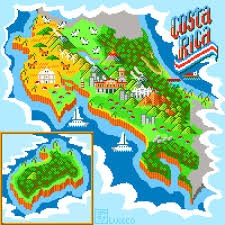

Biografia
Nací el 22 de abril del 2002 en San José Costa Rica, a la 1 de la tarde (aunque no crea en esto mi signo zodiacal es tauro). Estudié en el “Colegio Saint Francis” desde los 4 años hasta los 17 y antes estuve en un pre-kinder que se llamaba “Mis Primeros Pasos”. En primaria me iba relativamente bien académicamente pero en secundaria empecé a tener algunos problemas pero aunque me costó logré graduarme y obtener mi bachillerato. Luego decidí estudiar Ingeniería Electromedicina en la “Universidad Latina de Costa Rica”, logré darme cuenta que no era lo mío rápidamente y decidí estudiar cine. Por temas del momento en que decidí dejar electromedicina no pude entrar directamente a estudiar cine, entonces hice un pequeño curso en edición de fotografía, y cuando acabe pude entrar en la carrera de dirección de cine en la “Universidad Veritas”, primero entre en el tercer trimestre de las personas que cursaban primer año para luego cursar los primeros dos trimestres que me perdi. Aunque fue un poco difícil adaptarme, logré aprobar todo y poder cursar los otros dos trimestres con más facilidad. Cuando acabe estos dos trimestres en 2021 decidí ir a estudiar al extranger y tras bastante investigación encontré “Plató de cinema” en Barcelona donde curse dirección de cine por 3 años. Cuando acabé esta carrera en Barcelona, decidí seguir estudiando y entrar en “ENTI” para diseño y desarrollo de videojuegos.

Presentación

Nombre: Sebastián Mora Bermejo
Apodo: Morita
Edad: 22 años
Pronombres:
- Elle-ellxs
- They-them
Color favorito: naranja o morado
Número favorito: 8
Un poco de higlights de lo que se puede ver en las otras secciones:
- Un poco de mis gustos
- Algunos de mis trabajos
- Un juego (EN CONSTRUCCIÓN)
- Como contactarme